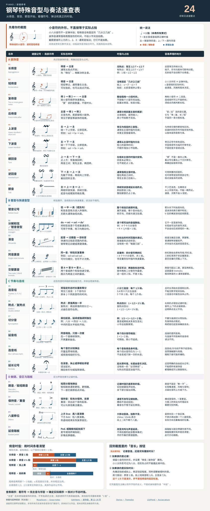

钢琴手套 · 使用说明
Windows 10 / 11（64 位）· 版本以软件文件属性与交付清单为准
电脑直接在软件窗口内操作；手机连接手套热点后使用浏览器。三步上手
- 插上：手套的 USB 线插到电脑上，打开手套电源，双击打开「钢琴手套」。
- 看到绿点：窗口右上角出现绿点和「手套（USB）· 已就绪」就连好了。没连上就点右上角齿轮里的「驱动帮助」，按提示点「安装驱动并连接」。
- 开始弹：点「曲库」选一首自带的曲子点「播放」；或者点「PDF 识谱」选一份网上下载的钢琴谱，认完点绿色的「▶ 送到手套，开始弹」。
想停就点右上角红色的「停止」或按 Esc。播放时可以「⏸ 暂停」，再点「▶ 继续」接着弹。如果提示需要更新固件，可按下面的“手套固件升级”在软件内操作。
不会看五线谱，怎么校对 PDF 认出来的谱？
- 先看结果：自动识别可能漏音或认错，建议对照原谱检查。暂时不处理的音可以跳过，送到手套时软件会说明跳过了多少处。
- 听一听：点谱子上方的「▶ 听这一行」，电脑播放识别出的音；需要从头听可点「⏮ 从头听」。
- 看拿不准的地方：上方显示还剩多少处，下方黄色文字解释为什么要检查。按需要点「指法」「节拍」或「时值」，对照原谱选择；也可以点「▶ 听这一小节」。
- 对指法：原谱音符旁的数字表示手指：1 拇指、2 食指、3 中指、4 无名指、5 小指。点需要修改的音，再选对应数字；看不清时可以先跳过，之后再核对。
- 准备好后，点上方绿色的「▶ 送到手套，开始弹」。
手套固件升级
将随软件提供的「固件升级」文件夹放在软件旁边，连接手套后，点击右上角的固件版本，再按窗口提示选择「更新固件」。软件会显示进度，完成后自动尝试重新连接，不用重开软件。升级过程中保持 USB 连接，不要拔线；如果窗口提示找不到升级文件，请检查文件夹是否在软件旁边。
打开软件的细节（遇到问题再看）
- 双击钢琴手套软件。PDF 转换可离线使用，无需连接手套或安装 Python；训练时再接好手套数据线。首次缺少 WebView2 界面组件时，软件会引导安装；也可从微软官网安装 WebView2（会打开电脑上的浏览器）。
- 缺少 USB 驱动时，打开 USB / 驱动帮助，按窗口提示安装。看到右上角「手套（USB）· 已就绪」后使用。
- 需要调整手套时，点顶部 调手套；完成后返回软件。右上角设置中提供驱动帮助、手机连接和使用说明。
- 训练结束先点页面右上角 停止，再关闭软件窗口。
打开程序和重连只恢复连接与状态，不自动开始训练。校准值和设备曲库沿用手套中已保存的内容。
电脑里的功能
| 入口 | 怎么用 |
|---|---|
| 手指训练 | 单指、组合、交替训练；调整速度、动作幅度和保持阻力。先确认手套行程与校准，再开始动作。 |
| PDF 转换 | 把 PDF 拖进窗口。未设指法的音默认灰色，保留音高、节奏和编辑按钮；若其他字段完整，不因指法为空列为待查。灰色可能是原谱未标或尚未读出，点击可补号；不能用灰色证明识别一定正确。已发现的数字归属疑点和音高、节奏问题仍提示核对。可同时拖入多份，之后从目录切换。 |
| 校对 | 点谱子下方的指法框，在下方选择指法、节拍或时值；想暂时不处理某个音，可以按界面提示排除。修改会自动保存到电脑。 |
| 曲谱速度 | 每首谱独立：能读到原谱数字速度时优先采用；只有Allegretto等文字或没有数值时，新谱初始为120 BPM，可在更多设置中修改。已经保存的本谱速度会恢复，不从上一首继承速度。 |
| 开始位置与时长 | 音值用四分、八分等图示选择，可选附点或三连音；开始位置可选“接前音”“同时弹”或“小节开头”，也可填写本小节内第几拍，无需计算整首累计拍。精确数值保留在详细设置中。 |
| 校对导航 | 默认显示全部右手音符；筛选“需检查”或“已忽略”时谱面和行导航一起过滤。“上一待查 / 下一待查”会直接定位具体音符，可跨页；改好后可主动跳到下一处，编辑中的音不会突然消失。 |
| 保存与导出 | 程序自动保存原谱、修改和当前位置，关闭时先停止本窗口正在执行的动作和声音，再提交当前输入并保存；保存失败会保留窗口，但不会恢复动作。重开导入原谱复用同版识别缓存，识别方式更新时会重算并保留能够对应的手改。无法对应的旧修改保存在复核文件中并提示。导出可选全部、所选行、所选页或自定义范围，只检查该范围。灰色未标音不新增手指动作，原有前后时间和休止保留；合法延音续音可合并进有号起音。全灰谱可完成识谱，但需要至少设置一个指法才生成动作谱。复核 JSON 保留原音符，可备份或拖回编辑。 |
| 延音与反复 | “更多设置”中的“合并延音线”控制识别出的延音候选，取消后不会自动合并。明确的反复可展开，也可选按谱面顺序导出；位置不明确时需人工检查。无固定时值的倚音需指定演奏时值或明确忽略，不会偷偷跳过。 |
| 曲谱文件 | .pglpack 包含曲谱与原谱，适合电脑/手机浏览器显示原谱；.pgl 为紧凑曲谱。两种格式都可从曲库上传入口使用。 |
| 软件自带曲谱 | 在「曲库 → 软件自带」选择曲子，可以先校对，再送到手套练习。自动识别的内容可能有误或漏音；没有人工核对的曲谱不能当作标准答案，也不代表已经逐首验收。 |
| 导入与管理曲库 | 可直接拖入 .pgl / .pglpack，程序先选空位置，再点上传。已有位置也可手动指定替换；下载、删除都在曲目旁，删除前会在软件内确认。最多保存 100 首；协议容量按每首 1000 音符约定，更长的曲谱也可使用，容量以剩余空间为准。 |
| 曲谱跟随与声音 | 专用播放页显示原谱、当前指法和进度；速度可调。开启声音后，长音持续、休止静音、和弦同时发声；停止后静音。 |
建议抽查识别结果，尤其是原谱省略指法、复杂装饰音或印刷重叠处；程序不为原谱没有的信息补猜答案。使用很小的窗口、高级设置或完整 PDF 时，可在对应面板内滚动。需要高速、全幅动作跟不上时，可把幅度按 100% → 80% → 60% 逐档缩小，校准范围不变。
手机怎么连接
- 手机连接 PIANO_GLOVE_ 开头的手套 Wi-Fi，系统通常会弹出控制页或“登录此网络”入口，点一下即可使用。
- 电脑“设置 → 手机连接”提供扫码连接；若手机没有自动弹页，用同一窗口提供的控制页二维码打开，无需手动输入地址。
- 网页由手套自身提供，不需要电脑保持运行，也不需要安装手机 APP。可独立训练、传谱、选曲、删除、替换和调速。
- PDF 转换在电脑端完成。手机需要显示原谱时，选择
.pglpack上传；已转换曲谱可直接从手机文件中选择。
如果热点登录小窗不能选择文件，请退出小窗，改用手机的完整浏览器。编号和行程调整在电脑端「调手套」入口。
常见情况
| 首次打开需要等待 | 首次运行会解包并准备组件，请等当前启动完成，再检查窗口是否被最小化。 |
| 串口被其他软件占用 | 先停止并关闭其他正在连接手套的软件，再使用本程序。 |
| USB 已连接，但等待舵机 | 检查舵机供电和总线连接；舵机就绪后会自动读取曲库和状态。 |
| 连上后按钮暂时不能操作 | 等待身份、校准、位置反馈和曲库重新读取。必要时检查数据线、电源及校准状态。 |
| 退出后的记录 | 日志和电脑校准记录保存在当前用户的 %LOCALAPPDATA%\PianoGloveSoftware。手套中已保存的曲库仍由手套管理。 |
24种特殊奏法：识别与练习转换
默认新转换生成可直接使用的练习编排。原谱音高、原印指法和书面音长保留，演奏速度、借时和辅助指法另存；没有唯一答案的部分标“估计”，不是把它们冒充原谱识别值。黄提示可以修改，不要求逐个确认才导出。
完整琴声与手指动作分开：新版.pglpack随谱包保存全部声音、动作和原谱。练习.pgl只有手套动作，缺对应随谱包时不会误放代表音。旧普通文件仍可使用；旧播放器需要更新才能读新版富编排包。
原谱没印指法仍显示灰色，声音保留，不凭空加独立手指动作。有印号但未读清时，练习暂用指法会标估计，可按原谱更改。无固定音长的倚音不能只因外形像八分就硬填半拍；可直接选择快速带过、分用主音时间或明确排除。
| 记号 | 软件怎么弹 | 要注意 | |
|---|---|---|---|
| 01 | 长倚音 | 先响倚音，再响主音；从主音预算内分配时间。 | 长短比例没有唯一答案，默认练习分配，可改。 |
| 02 | 短倚音 | 生成短促小音与主音两段，支持拍前或拍上借时，不给小节另加半拍。 | 短促程度与拍前／拍上是练习选择。 |
| 03 | 复倚音 | 一组小音按横向顺序弹，同列小和弦同时响，共用一次借时预算。 | 整组借时和辅助指法可改。 |
| 04 | 后倚音 | 在主音结束前带出小音，后续小节不因小音外形额外推迟。 | 后倚音归属不唯一时会标估计。 |
| 05 | 上波音 | 实际生成本音—上邻音—本音三个发声事件。 | 邻音按调号、局部变音和符号变音确定；速度／辅助手指可估计。 |
| 06 | 下波音 | 实际生成本音—下邻音—本音三个发声事件。 | 速度和未印辅助指法属于练习估计。 |
| 07 | 顺回音 | 生成上邻—本音—下邻—本音，支持在本音后半段回转。 | 上下邻的临时变音分别处理；延迟位置可改。 |
| 08 | 逆回音 | 生成下邻—本音—上邻—本音的逆向回转。 | 速度、位置和辅助手指可改。 |
| 09 | 颤音 | 在原持续预算内真正交替本音与邻音，保留每次发声和按下。 | 默认练习速度可改；不是把tr当一个长音。 |
| 10 | 琶音记号 | 和弦各音依次起音，保留全部声音，不再以普通同时和弦冒充琶音。 | 掠过速度／方向依据读到的记号或明确练习选择。 |
| 11 | 分解和弦／琶音音型 | 按已经写出的每个音独立弹奏，不重复展开一遍。 | 不把分解音型当漏读和弦。 |
| 12 | 滑音 | 生成滑过的逐键声音，手套保持所选手指。 | 手套不能横向移动手；横向滑动由人完成。 |
| 13 | 同音震音 | 单音或同一和弦真正重复发声、重复按下。 | 有明确斜杠按书面细分；自由速度使用可改练习值。 |
| 14 | 交替震音 | 两端音组真正交替；两端书面时值不被简单相加。 | 非定量速度仍标练习估计。 |
| 15 | 连音组 | 沿用读到的连音比例，把这些音放入相同的总时长内。 | 已经读成连音的音值不会再乘一次比例。 |
| 16 | 附点／复附点 | 按附点／复附点后的音值演奏。 | 保持已识读的书面长短，不重复加点。 |
| 17 | 切分音 | 保留跨拍起音和延续，下一强拍不被强行对齐。 | 不起新拍、不另补不存在的音。 |
| 18 | 延音线 | 核对连续同音后合并为持续声音；同指保持，指替换保留。 | 不把不同音的连线当延音线。 |
| 19 | 连音线 | 各音仍独立起音，声音在衔接处使用练习连奏量。 | 连音线不会变成只弹第一个音。 |
| 20 | 延长记号 | 音符或休止都可延长；同一暂停只算一次，后续声音和动作一起后移。 | 默认停留倍率是练习估计，可改。 |
| 21 | 跳音／极短跳音 | 声音和手指提前松开，下一音仍在原起拍；支持跳音与极短跳音。 | 缩短的是发声／按住时间，不改原谱拍数。 |
| 22 | 保持音／重音 | 保持音按足时值；重音改变发声力度。 | 重音不额外加拍；力度和触键量有练习参数。 |
| 23 | 八度移位 | 读到八度线后按对应音区播放，支持上移与下移。 | 已在音高里应用的移位不会再移一次；未知字形不乱套。 |
| 24 | 延音踏板 | 踏板区间延长声音共鸣，手指仍按各自时值松开。 | 没有踏板执行器；只做声音踏板。缺抬踏端点会标估计。 |
同指同起音的和弦可共享一次动作；错开起音的同指重叠会重新按下，长音声音独立延续。极快动作可能仍需降低整体速度，不能以软件时间线代替手套实测。
24 项记号原图

字形许可
Copyright © 2026, Steinberg Media Technologies GmbH (http://www.steinberg.net/), with Reserved Font Name "Bravura". This Font Software is licensed under the SIL Open Font License, Version 1.1. This license is copied below, and is also available with a FAQ at: http://scripts.sil.org/OFL ----------------------------------------------------------- SIL OPEN FONT LICENSE Version 1.1 - 26 February 2007 ----------------------------------------------------------- PREAMBLE The goals of the Open Font License (OFL) are to stimulate worldwide development of collaborative font projects, to support the font creation efforts of academic and linguistic communities, and to provide a free and open framework in which fonts may be shared and improved in partnership with others. The OFL allows the licensed fonts to be used, studied, modified and redistributed freely as long as they are not sold by themselves. The fonts, including any derivative works, can be bundled, embedded, redistributed and/or sold with any software provided that any reserved names are not used by derivative works. The fonts and derivatives, however, cannot be released under any other type of license. The requirement for fonts to remain under this license does not apply to any document created using the fonts or their derivatives. DEFINITIONS "Font Software" refers to the set of files released by the Copyright Holder(s) under this license and clearly marked as such. This may include source files, build scripts and documentation. "Reserved Font Name" refers to any names specified as such after the copyright statement(s). "Original Version" refers to the collection of Font Software components as distributed by the Copyright Holder(s). "Modified Version" refers to any derivative made by adding to, deleting, or substituting -- in part or in whole -- any of the components of the Original Version, by changing formats or by porting the Font Software to a new environment. "Author" refers to any designer, engineer, programmer, technical writer or other person who contributed to the Font Software. PERMISSION AND CONDITIONS Permission is hereby granted, free of charge, to any person obtaining a copy of the Font Software, to use, study, copy, merge, embed, modify, redistribute, and sell modified and unmodified copies of the Font Software, subject to the following conditions: 1) Neither the Font Software nor any of its individual components, in Original or Modified Versions, may be sold by itself. 2) Original or Modified Versions of the Font Software may be bundled, redistributed and/or sold with any software, provided that each copy contains the above copyright notice and this license. These can be included either as stand-alone text files, human-readable headers or in the appropriate machine-readable metadata fields within text or binary files as long as those fields can be easily viewed by the user. 3) No Modified Version of the Font Software may use the Reserved Font Name(s) unless explicit written permission is granted by the corresponding Copyright Holder. This restriction only applies to the primary font name as presented to the users. 4) The name(s) of the Copyright Holder(s) or the Author(s) of the Font Software shall not be used to promote, endorse or advertise any Modified Version, except to acknowledge the contribution(s) of the Copyright Holder(s) and the Author(s) or with their explicit written permission. 5) The Font Software, modified or unmodified, in part or in whole, must be distributed entirely under this license, and must not be distributed under any other license. The requirement for fonts to remain under this license does not apply to any document created using the Font Software. TERMINATION This license becomes null and void if any of the above conditions are not met. DISCLAIMER THE FONT SOFTWARE IS PROVIDED "AS IS", WITHOUT WARRANTY OF ANY KIND, EXPRESS OR IMPLIED, INCLUDING BUT NOT LIMITED TO ANY WARRANTIES OF MERCHANTABILITY, FITNESS FOR A PARTICULAR PURPOSE AND NONINFRINGEMENT OF COPYRIGHT, PATENT, TRADEMARK, OR OTHER RIGHT. IN NO EVENT SHALL THE COPYRIGHT HOLDER BE LIABLE FOR ANY CLAIM, DAMAGES OR OTHER LIABILITY, INCLUDING ANY GENERAL, SPECIAL, INDIRECT, INCIDENTAL, OR CONSEQUENTIAL DAMAGES, WHETHER IN AN ACTION OF CONTRACT, TORT OR OTHERWISE, ARISING FROM, OUT OF THE USE OR INABILITY TO USE THE FONT SOFTWARE OR FROM OTHER DEALINGS IN THE FONT SOFTWARE.
第三方许可
本程序包含 Python、pywebview、pythonnet、pyserial、PDFium/pypdfium2、pypdf、Pillow 及打包运行组件。保留各组件原许可；下列随程序提供的原文可离线查看。
冻结运行版在此列出实际随附的许可文件。